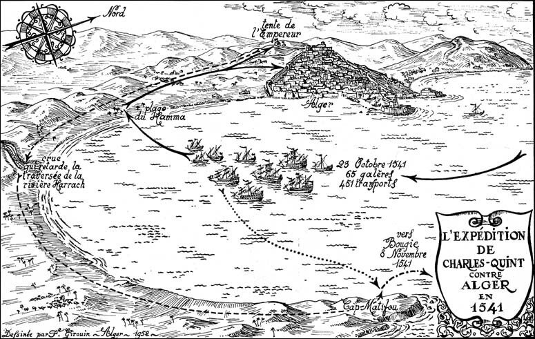
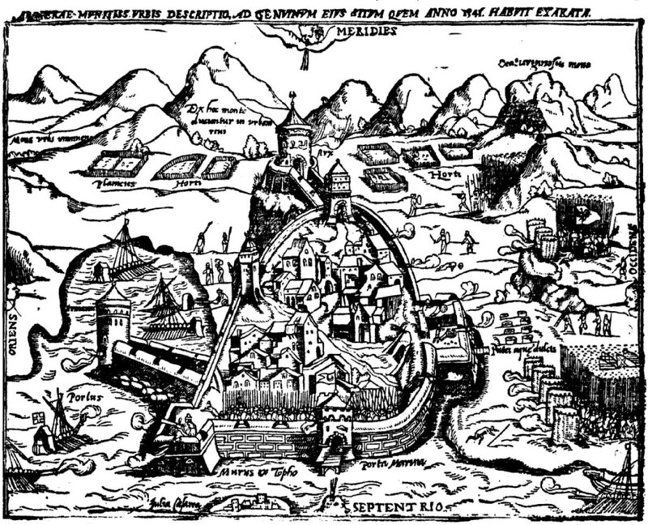

'Tantane vos generis tenuit fiducia vestri?
Iam caelum terramque meo sine numine, venti,
miscere, et tantas audetis tollere moles?
Quos ego…
P. Vergili Maronis Aeneidos, I, 132-135.
"Вот до чего вы дошли, возгордившись родом высоким,
Ветры! Как смеете вы, моего не спросив изволенья,
Небо с землею смешать и поднять такие громады?
Вот я вас!
Вергилий, Энеида (Пер. С.Ошерова)
После неудачи на море под Превезой в 1538 году Карл V искал возможность реванша. И вот три года спустя ему показалось, что такой момент настал. Карл решил, что он имеет возможность повторить операцию, подобную захвату Туниса в 1535 году, но на этот раз в Алжире. Барбаросса в это время находился в Стамбуле и Карл посчитал, что его флот встретит в Алжире слабое сопротивление.

Расчет мог оказаться верным, если бы не всегдашняя медлительность в осуществлении разработанных планов. Король отдал приказ о формировании сил для захвата Алжира в Испании, Неаполе и на Сицилии. Эрнану Кортесу, испанскому конкистадору, завоевателю Мексики, было поручено вооружить новые формирования, что Кортес выполнил с большим рвением, вложив в вооружение армии много собственных средств. Общее командование сухопутными силами экспедиционной армии было поручено герцогу Альбе, заслужившему в последующем скандальную славу своим наместничеством в Нидерландах.
Письмо с приглашением участвовать в походе было направлено и Великому магистру Мальтийского ордена Хуану де Омедесу. Карл уверял, что эта экспедиция предназначена только лишь для уничтожения корсаров и врагов ордена. Число добровольцев, как всегда, было велико, однако Великий магистр не разрешил отправку более 400 рыцарей на четырех галерах, чтобы не лишать защиты не обустроенные пока укрепления Мальты. Каждому рыцарю было разрешено взять по два хорошо вооруженных оруженосца. Командование эскадрой было возложено на Георга Шиллинга, генерала галер ордена и главу германского ланга. Мальтийские галеры присоединились к той части императорского флота, на которой находился сам Карл, решивший лично возглавить экспедицию. Однако время для похода было упущено. Затянувшиеся переговоры в попытке примирить католиков с протестантами в Регенсбурге, закончившиеся принятием Регенсбургского интерима, не решили поставленной задачи, но поглотили лучший для боевых действий на море сезон. Объединенному флоту рандеву было назначено на Майорке в конце сентября. Опытные моряки отчетливо понимали неудачность выбора времени для похода. Однако придворные подхалимы и льстецы поддержали короля в его горячем стремлении выбить турок из Алжира. Была также информация, что правитель Алжира старый евнух Хасан обещал Карлу сдать город без боя. По этой ли причине, или по приказу Карла, но армию сопровождали сотни известных испанских грандов, некоторые даже взяли с собой жен. Лишь один Андреа Дориа, назначенный командовать объединенным флотом, предостерег Карла от необдуманных действий, четко описав ему все возможные последствия шторма у берегов Северной Африки в этот период. На эти предостережения император отделался шуткой, намекающей не библейскую предопределенность срока жизни людей и существования империй. Но уже по пути к Алжиру корабли попали в жестокий шторм, задержавший их прибытие к североафриканскому побережью до 19 (по некоторым источникам – до 24 и даже 26) октября.
Ветер утих, но волнение было все еще очень сильным. И гребцы галер, и находящиеся на их борту солдаты были по пояс в холодной воде. Ни о какой разгрузке не могло быть и речи. Только лишь через два дня смогли начать выгрузку на берег продовольствия и артиллерии. Место было выбрано на пляжах к западу от мыса Матифу. Удалось разгрузить около 60 галер, и несколько крупных парусных транспортов. На берегу оказалось около 20 000 человек пехоты и до 6 тысяч кавалерии. Вообще, армада на подступах к Алжиру собралась огромная, ничуть не меньшая, чем Непобедимая Армада, отправившаяся на завоевание Англии в 1588 году.
Чтобы предотвратить обычные в таких походах стычки между солдатами различных национальностей, Карл разделил экспедиционную армию на три корпуса по национальному признаку. В авангард был поставлен испанский корпус из опытных солдат-ветеранов. Основные силы армии составлял корпус итальянцев и приданных им мальтийских рыцарей, которые, правда имели подчинение непосредственно императору, штаб-квартира которого находилась в расположении мальтийцев. Третий корпус, который был поставлен в арьергард, состоял из германцев и бургундцев, а также многочисленных добровольцев со всей Европы.
Не успели экспедиционные силы поставить палатки и обустроить лагерь, как подверглись неорганизованным атакам легкой кавалерии арабов. Их отряды совершали набеги и, не втягиваясь в затяжные бои, откатывались назад. Разгрузку снаряжения пришлось прервать. Карл был удивлен: по его данным, у евнуха Хасана было всего около девятисот янычар, несколько тысяч моряков и не более 6000 мавританцев. Здесь же действовали местные арабские всадники. Оказалось, что пока армада добиралась до алжирского побережья, с гор спустились берберские и арабские племена. Конечно же, они не представляли серьезной угрозы войскам Карла, но с самого начала все пошло не по плану. Отбив кочевников, отряды императора решили с ходу захватить город Алжир, однако встреченные артиллерий с крепостных стен, вынуждены были окопаться.

За всеми этими незначительными боями командование армии упустило из виду необходимость завершения разгрузки оставшегося на кораблях снаряжения и пушек.
Внезапно налетевший шквал сорвал палатки солдат императора. Штормовой ветер западного направления с проливным дождем вынудил галеры, находившиеся в Алжирском заливе, отойти в море. А между тем у солдат закончилось продовольствие и подмокший порох стал непригоден для стрельбы. Евнух Хасан повел своих янычар на противника, использование ими ятаганов, железных луков и стрел не зависело от погоды. Карл лично повел войска в контратаку, но его отряды понесли большие потери от турецкой артиллерии и вынуждены были отступить. Мальтийские рыцари потеряли 75 человек убитыми (в основном из-за отравленных стрел), а также трех капелланов и около 400 солдат. Большие потери были и в других корпусах.
Тем временем шторм перешел в ураган. И снова, как и при Превезе, Андреа Дориа наступил на те же грабли – отсутствие взаимодействия между гребным флотом и парусными кораблями. Если галеры, отойдя в море, кое-как держались во время шторма, то парусные транспортные суда, экипажи которых не способны были управлять своими кораблями при таком ветре, остались в заливе. Значительная часть их была разбита бурей и затонула. Вместе с погибшими в море галерами число потерь составило около ста сорока пяти кораблей и судов. (Впрочем, Верто пишет о 15 галерах и 86 других судах, потерянных во время этого шторм – de Vertot The History of the Knights Hospitallers of St. John of Jerusalem Vol.4 p.86.) Выбравшиеся на берег члены экипажей были уничтожены кочевниками, которые как пчелы на мед слетелись со всего побережья на легкую добычу. Они выстроились вдоль берега, убивая всех, кому удалось выплыть. Испанский историк Альфонсо де Уллоа (Ulloa), отец которого был в этой экспедиции, описывает эту сцену в очень мрачных красках, подчеркивая, что арабы не жалели никого, даже женщин, которые были на борту галер. Продовольствие было разграблено подчистую, в том числе и находившиеся под незначительной охраной запасы, выгруженные на берег ранее.
Проливной дождь, не прекращавшийся всю ночь, превратил землю вокруг Алжира в сплошное болото. Небольшие речушки превратились в бурные потоки, форсировать которые не было никакой возможности. Рейды арабских отрядов не встречали практически никакого сопротивления, окоченевшие солдаты, не способные защищаться, были изрублены защитниками Алжира. Только мастерство и отвага мальтийских рыцарей, державших оборону вокруг Карла V, не позволили арабам захватить императора в плен.
Карл решил снять осаду с города и отступить к месту высадки. Против этого возражал только Кортес, но он не входил в состав императорского совета как человек низкого звания и с ним никто считаться не стал. Ввиду продолжавшегося сильного волнения на море Дориа не смог подвести корабли к указанному месту и вынужден был сконцентрировать их в бухте под прикрытием мыса Матифу. Идти до них нужно было по размокшему берегу около 20 км. Продовольствия не было и император приказал использовать в пищу вьючных лошадей. Чтобы форсировать потоки, пришлось наводить мосты из выброшенных на берег останков кораблей. Деморализованное войско тащилось до кораблей трое суток, без продовольствия, без пороха, неспособное даже ответить на насмешки кочевников, сопровождавших их на своих лошадях.
Прибыв к кораблям, Карл собрал военный совет, чтобы наметить план дальнейших действий. Против варианта дожидаться на берегу подхода кораблей с провиантом и вооружением из Европы решительно выступил Дориа. Он предупредил, что у берегов Алжира может вот-вот появиться флот Барбароссы, противостоять которому потрепанная эскадра императора не в состоянии. Решили грузиться на корабли и покинуть алжирское побережье. Кораблей не хватало, решено было сбросить в море знаменитых испанских скакунов: «Цезарь решил, что нельзя жертвовать жизнями солдат ради лошадей».
Но злоключения экспедиционного корпуса на этом не закончились. Сразу после выхода конвоя в море начался новый сильный шторм, которых разметал корабли, некоторые из которых были прибиты к алжирскому берегу, где их экипажи были уничтожены янычарами Хасана. Дориа смог привести группу судов с Карлом на борту в удерживаемый испанцами североафриканский порт.
Тайный агент французского короля позднее докладывал Франциску о печальной судьбе людей, оказавшихся в порту Беджая: «Лишь одна каракка смогла добраться до упомянутого порта Беджая и затонула там, трудно выговорить, в присутствии самого императора, прежде чем из нее можно было что-либо выгрузить. В этом порту они пережили самый страшный в своей жизни голод, имея для еды только кошек, собак и траву.., зять императора убежал в одной рубашке и штанах.., погибла большая часть испанских грандов». (Лэмб. Сулейман, султан Востока) Здесь, конечно, надо сделать скидку на то, что посол сообщал французскому королю информацию, которую последний хотел от него слышать. На самом деле в Беджаю прибыл тунисский король с продовольствием, которое в определенной степени решило проблему корпуса. Но факт гибели парусного корабля с 700 солдатами на борту практически на глазах императора подтверждают и другие историки. В конце ноября на прибывших с Сицилии кораблях Карл вернулся в Испанию.
В течение семнадцати лет, которые осталось прожить Карлу, он больше ни разу не отважился отправиться в морской военный поход.